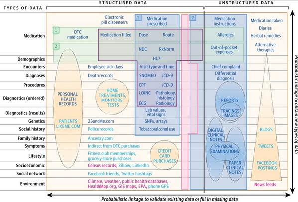
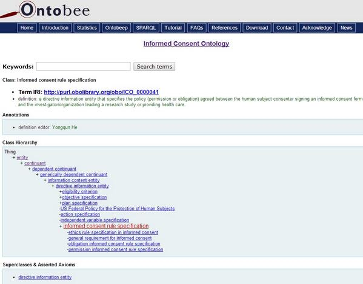

May 2014
+10 RT @ICMEStanford: If you fancy 13 minutes of linear algebra, and a bit of art inspired by it, check this out fb.me/6xFzIJ8KF
MT @hmkyale: YODA Project seeks public comment
medicine.yale.edu/core/projects/… <- Use "C21th structured data standards" kerfors.blogspot.se/2013/03/talkin…
medicine.yale.edu/core/projects/… <- Use "C21th structured data standards" kerfors.blogspot.se/2013/03/talkin…
Learning about the powerful D3 construct: selectAll / data / enter / append,, from shop.oreilly.com/product/110000… and jeromecukier.net/blog/2013/03/0…
WIll be in interesting to see @CDISC's white paper on research concepts mungingmetadata.blogspot.se/2014/05/may-ju… as many talks about them and few know more
Nice to see @swhume, my former colleagu and now @CDISC SHARE leader, blogging mungingmetadata.blogspot.se #cdisc #metadata
@agentGav @tommyh @owenboswarva And most important: #InfoAccountability what do they use it for dig.csail.mit.edu/2014/Accountab… cc: @djweitzner
Good read #opendata #openscience @ScientificData nature.com/sdata/data-pol… to calm down after reading #EMA #screenonly iqwig.de/screenonly
"Big data helping machine learning to solve an issue with the storage of... big data" @peterlunn comment on googleblog.blogspot.se/2014/05/better…
"Scientists may make things provable, but writers make them memorable" gu.com/p/3pedt/tw <- And #LinkedData make them discoverable
@fhwehbe I did a small test: gender roles fields as def. in Ontology of Medically Related Social Entities e.g purl.obolibrary.org/obo/OMRSE_0000…
@RebarInter lets's ask @danbri and @aaranged for an update on the use of the medical trial entity in schema.org for SEO
@RebarInter Yes, and problems for the authorities, see my response to @EFPIA's blog post twitter.com/kerfors/status…
.@RebarInter @RebarInter .. to descriptions of each study as structured data according to Google's/Bing's/Yahoo's schema.org/MedicalTrial
Great blog post from @deevybeeb: "Data sharing: Exciting but scary" deevybee.blogspot.co.uk/2014/05/data-s… #opendata
Welcome to the Swedish Bioinformatics Workshop, 23-24 Oct, Gothenburg #sbw2014 #bioinformatik #bioinformatics sbw2014.se
"Scientists may make things provable, but writers make them memorable" gu.com/p/3pedt/tw <- And #LinkedData make them executable
#ToRead @electricbum's PhD thesis "Supporting loose forms of collaboration' using Linked Data.." kth.diva-portal.org/smash/get/diva… <- Congrats Hannes
"Data Transparency and Traceability" @PHUSETwitta phuse.eu/Copenhagen2014… <- Check out W3C Provenance standard w3.org/TR/2013/NOTE-p…
Free: Intro to Modern Machine Learning, Aug 11-15, Stanford @ICMEStanford icme.stanford.edu/courses/summer… Would have been so nice after my ML MOOC
Come join us at AstraZeneca! Solution Architect jobs.astrazeneca.com/jobs/details/l… #itjobs #nyttjobb #gbgftw
Come join us at AstraZeneca! Solution Engineer, Mölndal, Sweden jobs.astrazeneca.com/jobs/details/l… #itjobs #nyttjobb #gbgftw
+1 RT @DublinCore: "Metadata brings into focus how your data is being leveraged" @SiliconANGLE bit.ly/1lLZtL4
"machines armed with mountains of data will (and should) make most of the clinical decisions in the future" @vkhosla medcitynews.com/2014/05/vinod-…
This week I'll follow #eswc2014 @eswc_conf for the latest scientific/technological results on Semantic Technologies? 2014.eswc-conferences.org
"AZ provides tremendous transparency: publishes its pipeline on its website" @John_LaMattina onforb.es/1jCOjLH <- not as #opendata, yet
#ToRead #LongRead blog serie by @baskaufs: Confessions of an RDF Agnostic, now part 6 bit.ly/1opw5gn #rdf #linkeddata
@der42 To encourage MedDRA to publish in RDF up front slideshare.net/kerfors/pushin…. The Bioportal version is an issue for them
Bookmarked: "Lessons learned from the fate of AstraZeneca's drug pipeline: a five-dimensional framework" on CiteUlike ift.tt/1ktC7LW
One more interesting feed to follow tonight #trialsontrial Trials on Trial mjauk.org/content/may-22… with @trished @stephensenn et al
I'm looking forward to the video of @DrTaha_FDA #bigdatamed talk bigdata.stanford.edu It will be very useful in industry cc @SUMedicine
Finally sitting down watching the #bigdatamed live video bigdata.stanford.edu Great to see ePad #SemanticWeb semanticweb.com/stanford-resea…
MT @jessiet1023: Zak Kohane's much-requested #BigData figure from #TBICRI14 jama.jamanetwork.com/article.aspx?a…

@atulbutte "if a tweet starts with the @ symbol, Twitter views it is a conversation between just those two users" academiclifeinem.com/making-confere…
Nice to hear @olofhernell from Google Enterprise talk about KnowledgeGraph google.com/insidesearch/f… at @Findwise's search seminar
From @andershaggdahl's trend watch in @Findwise's search seminar: LEGO Taxonomy | Popular Science po.st/xt6YRB
The #bigdatamed feed from @SUMedicine Big Data in Biomedicine conf stanford.io/1og32vy is awesome. Hope to watch the live video tonight
Summary 1st day #Intranatverk [swe] tiny.cc/0r26fx @fredrikwacka via @Niklas_Angmyr Check out Schema.org via @aaranged
"data will be used by unspecified people, in unspecified ways, at unspecified time" blogs.lse.ac.uk/impactofsocial…
Interesting to see the Informed Consent Ontology (ICO) code.google.com/p/ico-ontology/ announced on the #ClinicalTrialsDay #AllTrials
Informed Consent Ontology (ICO) code.google.com/p/ico-ontology/ <- Interesting for dynamic, machine executable ICF kerfors.blogspot.se/2013/11/de-ide…
Informed Consent Ontology (ICO) code.google.com/p/ico-ontology/ e.g. class 'informed consent rule specification'

MT @r_zetterlind: Intranätet är som en trädgård, måste underhållas #Intranatverk <- reminds me of Ciborra's Caring en.wikipedia.org/wiki/Claudio_C…
Very interesting -> Adjustable table of contents for all your company’s data from @Tamr_Inc venturebeat.com/2014/05/19/tam… via @djweitzner
Reposting of favourite: "The Log: What every software engineer should know..." engineering.linkedin.com/distributed-sy… by @jaykreps cc: @olofbelfrage
O'Reilly Webcast 21th May: I ♥ Logs: Apache Kafka and Real-time Data Integration oreilly.com/pub/e/3098 cc: @olofbelfrage
#MOOR / @Researchorsera ?? -> MT @Recode: Baidu Hires Coursera Founder @AndrewYNg to Start Massive Research Lab on.recode.net/1jCE582
@Doug_Laney "drug project information advocate/champion who can facilitate access to complex information needs" jobs.astrazeneca.com/jobs/details/l…
This looks like a great MOOC for eHealth app developers Karolinska Inst: Behavioral Medicine: A Key to Better Health edx.org/course/kix/kix…
So, I better do some reading on #ProbabilisticProgramming to better understand Stan and JAGS radar.oreilly.com/2013/04/probab…
Not that often I see things/names I haven't heard of. However, JAGS, Stan in this job ad are new for me bit.ly/19hdDwX cc: @druau
JPMorgan Chase: "Experience with RDF Schemas, building and executing SPARQL queries, modeling ontologies using OWL" semanticweb.com/semantic-web-j…
Recommended yet another colleague to read @mrogati's awesome blog post "The Rise of the Data Natives" recode.net/2014/04/10/the…
See you there :-) RT flandqvist: #findability #summer @Findwise www2.findwise.com/Google-seminar… #google
+10 RT @ukodi: 'Opendata is a public good. It should not be confused with data sharing' says @JeniT in @guardian theguardian.com/commentisfree/…
Updated my Storify from @theIOM Trial Data Sharing Workshop last Monday, session on Governance and Infrastructure storify.com/kerfors/iom-on…
Excellent blog post -> RT @GrahameGrieve: Sharing Healthcare Data Between Primary and Secondary Usage healthintersections.com.au/?p=2079
@cdsouthan Agree, that would be nice, To some extent see this NEJM article nejm.org/doi/full/10.10… @Pharmafocus
@PharmaceuticBen No, not working: pharmafile.com/news/186048/tr… linked in the text "The website access allows clinical study reports ..."
30 secs from @wilbanks on owning your own health data nbcnews.com/feature/30-sec… <- bottom line "ask for a copy of your data"
My Storify from watching parts of The IOM Trial Data Sharing Workshop, 5 May, storify.com/kerfors/iom-on… with quotes from @hmkyale @pebourne
I've just updated my professional profile on LinkedIn. Connect with me and view my profile. linkedin.com/in/kerfors #in
"Experience in SPARQL a plus" snee.com/bobdc.blog/201… <- nice blog post from @bobdc (AstraZeneca on the list of job postings)
Bookmarked: "Models in biology: 'accurate descriptions of our pathetic thinking'" on CiteUlike ift.tt/1j49HmJ
Bookmarked: "Model-based drug development: a rational approach to efficiently accelerate drug development." on C... ift.tt/Qfg1kz
I just signed up for the O'Reilly Webcast: I ♥ Logs: Apache Kafka and Real-time Data Integration
oreillynet.com/pub/e/3098
oreillynet.com/pub/e/3098
How to use Twitter at medical conferences bit.ly/1dweywq via n@etworkpharma. @lenstarnes <- nice infographic for all types of event
1st CFP: ISWC'14 Workshop on Context, Interpretation and Meaning (CIM2014) macs.hw.ac.uk/~fm206/cim14/ #iswc2014
@jacobideskog Tack. Gillar: "Data DNA". Identity for Access, och Identify for #InfoAccountability dig.csail.mit.edu/2014/Accountab… cc: @JOAlmstrom
@pernillan Norr om #gbgftw rekommeneras bohusfastning.com | carlsten.se och Marstrand | havetshus.se |@NordensArk
Hi @andreaskrohn, check out @Open_PHACTS: Open PHACTS API dev.openphacts.org and iospress.metapress.com/content/j3j127… for #nordicapis conference.
+10 MT @wilbanks: My @OReillyMedia piece on citizens as partners in the use of clinical data strata.oreilly.com/2014/05/citize… #ctdata #alltrials
Insight from this morning - I should look into material from the Probabilistic Graphical Models MOOC spark-university.s3.amazonaws.com/stanford-pgm/P…
@medicalaxioms @stephensenn check out Ontology for General Medical Science (OGMS) code.google.com/p/ogms/
The discussion in @theIOM workshop now on identification and informed consent. Here's some thoughts on this kerfors.blogspot.se/2013/11/de-ide…
It's been great following the webcast, transcription and tweets from the @theIOM workshop ow.ly/wqoFT on sharing #ctdata
Very interesting comments from @hmkyale "exploratory findings vs definitive findings" in @theIOM workshop ow.ly/wqoFT
"15-20 FTEs on the next couple of years to get all of our trials back to the year 2000" via clinicalstudydatarequest.com --Frank Rockhold, GSK
Bookmarked: "A human rights approach to an international code of conduct for genomic and clinical data sharing."... ift.tt/1fMAPfJ
"exactly how data are being used in the atomic level of that data" --@pebourne <- Recommend @w3c Provenance w3.org/TR/prov-overvi…
+1 "automated checking of machine readable data sharing plans" --@pebourne in IOM Workshop ow.ly/wqoFT
Will watch webcast tonight: Strategies for Responsible Sharing of Clinical Trial Data ow.ly/wqoFT w/ @pebourne @hmkyale et al
RT “@gray_alasdair: Fanstastic resource of #linkeddata material maintained by @kerfors
kerfors.blogspot.se/p/linked-data-… <- Thx Alasdair
kerfors.blogspot.se/p/linked-data-… <- Thx Alasdair
More to read this weekend -> @vkhosla: Stephen Hawking: 'are we taking AI seriously enough?' ind.pn/1fFuliL
Neil Woodford: Pfizer has clearly recognised that AstraZeneca has changed massively for the better | via @Telegraph fw.to/AY0G90e
Interaktiv presentation - spännande vill gärna testa -> @mikumaria: Dream on! #gbgstartuphack uberhead.se audioboo.fm/boos/2128160-d…
MT @gbgstartuphack: Read all about #gbgstartuphack in @GoteborgsPosten: m.gp.se/nyheter/gotebo… [Swe]
Why becoming a #DataScientist is NOT actually easier than you think medium.com/cs-math/5b65b5… by @josephmisiti #datascience via @KirkDBorne
Bookmarked: "From Concept Representations to Ontologies: A Paradigm Shift in Health Informatics?" on CiteUlike ift.tt/1nbQ8Ov
Very nice nice blog by @fifokaswiti All MOOCed Up allmoocedup.blogspot.com/2014/04/all-mo… #MOOC via @edXOnline
Why/how/when is open corporate data good for business? with @CountCulture scribd.com/doc/221542735/… [slides] soundcloud.com/theodi/2013092… [audio]
Bookmarked: "Ten Simple Rules for the Care and Feeding of Scientific Data" on CiteUlike ift.tt/1nL9xZk